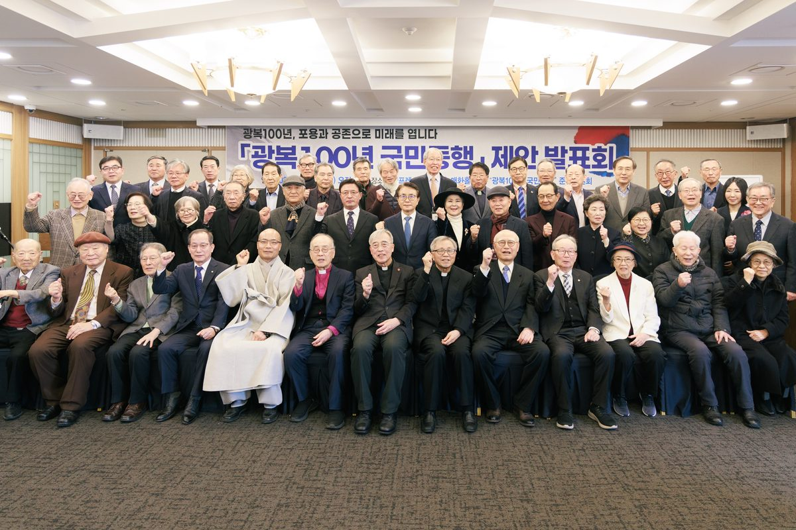
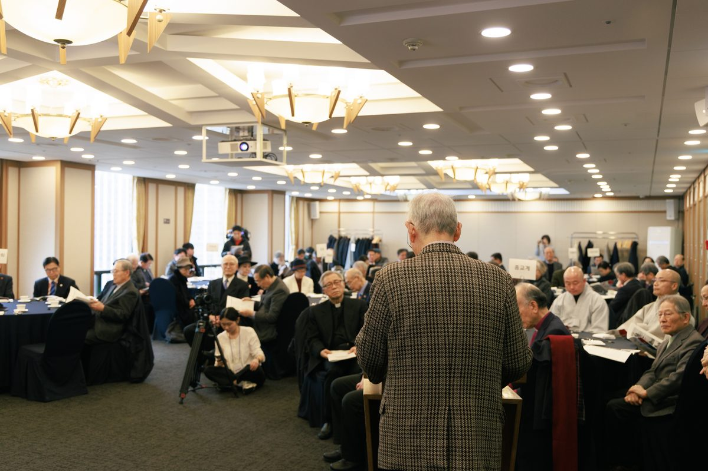
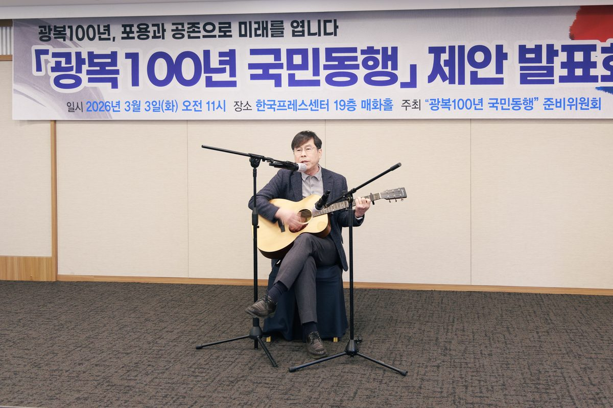

2026. 3. 3
제안 발표회 기록
한국프레스센터 매화홀에서 각계 151인이 모여 광복100년 국민동행을 제안했습니다.

개회사 — 이부영 준비위원장



2045
광복 100주년
1945년 광복에서 100년,
다음 세기를 향한 출발점
각계 제안자
151인
2026년 3월 3일, 3.1절 107주년을 맞아 각계 151인이 모여 '광복100년 국민동행'을 제안했습니다. 분열과 대립을 넘어, 모두가 함께 사는 길을 찾겠다는 뜻입니다.
서로 다른 생각과 삶의 모습을 인정하고 이해하는 너른 마음
Inclusion
서로 다른 사람들끼리 이해하고 인정하며 함께 사는 태도
Coexistence
하고 싶은 것을 모두 하지 않고, 넘지 말아야 할 선을 스스로 지키는 자세
Temperance
이념과 세대를 횡단하는 공론의 장을 열어, 소모적 정쟁을 넘어 사회적 접점을 모색합니다.
기후위기, 저출산, AI 시대 — 청년이 직면한 과제를 청년 스스로 설계하도록 지원합니다.
혐오와 배제의 언어를 거두고, 포용과 절제를 사회 생활 규범으로 정착시킵니다.
평화, 인구, 기후 등 2045년까지 국가 핵심 과제를 연구하고 기록하며 자산화합니다.
한국프레스센터 매화홀에서 각계 151인이 모여 광복100년 국민동행을 제안했습니다.
개회사 — 이부영 준비위원장



상설 공론 플랫폼
우리 사회의 대립을 해소하고 공동체 신뢰를 회복하는 제도적 상설 플랫폼. 시민 참여의 역동성을 확보합니다.
미래전략 싱크탱크
공론화 성과를 정책으로 연결하고 중장기 국가 전략을 수립하는 순수 민간 전문 연구 재단입니다.
사단법인 설립을 위한 국민발기인을 모집합니다. 포용과 공존의 대한민국을 향한 여정에 함께해 주세요.